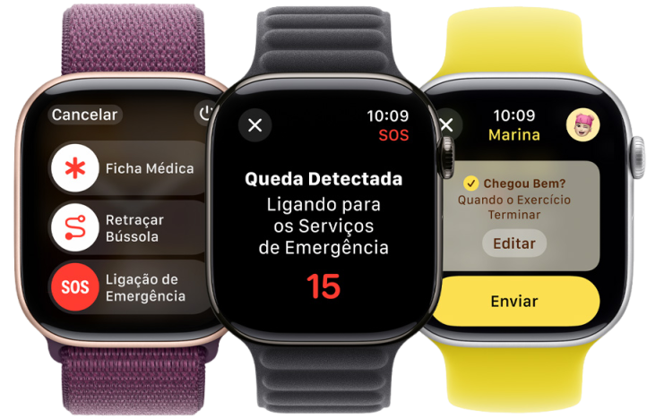

Apple Watch Series 10
Seu pulso, sua saúde, seu estilo.
O Apple Watch Series 10 representa um salto significativo na tecnologia wearable. Com um design mais fino e elegante, o relógio oferece uma tela maior e mais brilhante. Mas o que realmente o destaca são suas inovações em saúde.
O relógio inteligente mais avançado já criado!
Com um design elegante e recursos inovadores, ele é o companheiro perfeito para qualquer ocasião.
Descubra como o Apple Watch Series 10 pode transformar sua vida.
Saúde: Monitoramento cardíaco, detecção de quedas, acompanhamento do sono. O Apple Watch Series 10 é muito mais do que um dispositivo tecnológico, é um investimento na sua saúde. Com suas funcionalidades avançadas de monitoramento cardíaco, detecção de quedas e acompanhamento do sono, ele oferece a você e seus entes queridos a tranquilidade de saber que você está seguro.
Fitness: Treinos personalizados, métricas precisas, resistência à água. O Apple Watch Series 10 não é apenas um relógio inteligente, mas também um personal trainer de pulso. Com recursos avançados de fitness, ele o acompanha em todas as suas atividades, oferecendo dados precisos e personalizados para que você alcance seus objetivos.
Conectividade: Notificações, chamadas, controle de música. O Apple Watch Series 10 oferece uma experiência de conectividade sem igual, permitindo que você permaneça conectado com as pessoas e as informações mais importantes, a qualquer hora e em qualquer lugar. Com recursos como notificações personalizadas, chamadas telefônicas e controle de música, o Series 10 é o companheiro perfeito para um estilo de vida conectado.
Desempenho
Eleva o desempenho a um novo patamar que te surpreenderá.
O Apple Watch Series 10 não se limita a oferecer recursos inovadores de saúde e fitness; ele também estabelece um novo padrão em termos de desempenho. Graças ao chip S10, um processador customizado pela Apple, o Series 10 garante uma experiência fluida e responsiva em todas as tarefas.
Memória de até
64 GB
Processador S10
SiP com dois núcleos de
64 bits
Sistema operacional
WatchOS 11
Duração de bateria de até